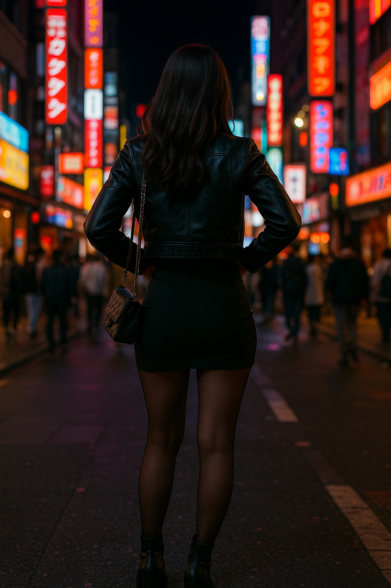

Tokyo After Dark: Night Fashion That’s Turning Heads in Shibuya
Shibuya shines at night not only with lights, but with bold looks turning heads on every street corner.
When the sun sets, Shibuya’s bustling streets transform into a dazzling display of neon and fashion. The area comes alive after dark with young women donning daring, vibrant outfits that are as luminous as the lights above.
The nightlife fashion scene in Shibuya is all about standing out. Leather jackets, sequined skirts, and high heels are staples, but it’s the unique combinations of textures, oversized layers, and fearless accessories that set the tone.
Street photographers roam the alleys hoping to capture the electric energy of this nighttime style. It’s a blend of confidence and chaos — stylish, unapologetic, and fiercely modern.
So if you ever find yourself in Tokyo, don’t just visit Shibuya during the day. Come after dark — and bring your boldest outfit.
← Back to News